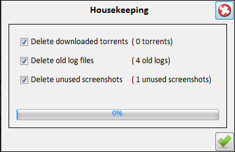
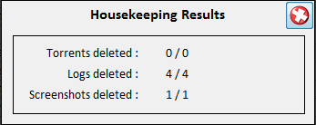

| Housekeeping | |
|---|---|
|  |  |
| Select the kind of files to delete | Results |
|
Housekeeping deletes old not needed files like old log files,
downloaded torrent files and not used screenshot images. First a panel is shown where you can check what kind of files you want to delete. After ok is pressed and files are deleted a report of the housekeeping results is shown. | |